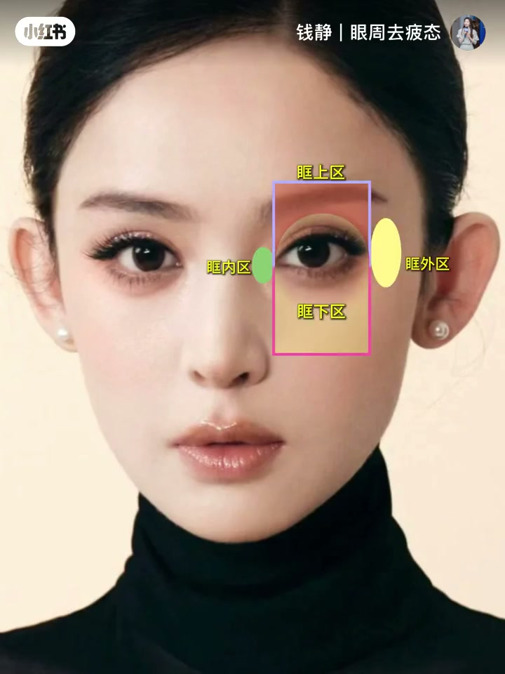

内容要点
「钱静｜眼周去疲态」约 23 秒视觉短片：用多张眼部特写对比，点出年轻感关键在眼周结构而非「整只眼睛画大」。文案与画面标注泪沟、眶外 C 等概念；作者说明眼周可拆为眉弓、上睑、下睑、泪沟（眶下缘）、外眦五个亚单位，年轻感来自明暗过渡。Whisper 几乎失效（仅「什么是勒沟」≈泪沟），内容依据画面标注与笔记文案重建。
知识结构
[00:00→00:08]
疲态特写
眼下阴影/泪沟深度被侧光强调，建立「显疲惫」参照。
[00:08→00:16]
结构名词
画面抛「什么是泪沟」「什么是眶外C」等标注。
[00:16→00:23]
年轻对照
更紧致有神的眼周对照，暗示微调过渡即可。
总结
眼睛年轻感看的是眉弓到泪沟、外眦之间的明暗过渡是否顺，而不是单一「眼睛有多大」。
00:00-00:23泪沟与眶外 C：眼周亚单位决定年轻感
开场多组眼部大特写：有的侧光下泪沟与青影明显，有的笑容明亮；中间插入模特妆面特写并打出「什么是眶外C」等黄底标注。ASR 把「泪沟」听成「勒沟」，宜按泪沟（眶下缘）理解。
结合笔记文案：眼周不是糊成「眼睛那一圈」，而是眉弓、上睑、下睑、泪沟、外眦五个亚单位；年轻感不来自每一格都填满，而来自它们之间的明暗过渡。小美与顶美有时只隔一次看懂细节的微调。短片以画面教学为主，口播几乎不可用。
[00:02] 眼周特写：侧光下泪沟与疲态阴影清晰
Periorbital close-up: tear trough and fatigue shadows clear in side light
[00:15] 妆面特写叠加标注：什么是眶外C
Makeup close-up with callouts: what is the outer orbital C

[00:20] 更紧致有神的眼周对照，暗示年轻感过渡
Tighter, brighter eye-area comparison—hinting a youthful transition
完整转录（1段）
以下文本由 Whisper medium 模型自动转录，可能存在少量识别误差，已尽可能修正。
什么是勒沟